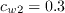
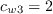
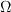
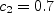

Public Access (formerly Langley Research Center)Turbulence Modeling Resource |
The Spalart-Allmaras Turbulence Model
This web page gives detailed information
on the equations for various forms of the
Spalart-Allmaras turbulence model.
All forms of the model given on this page (EXCEPT for
SA-QCR2000,
SA-QCR2013 / SA-QCR2013-V,
SA-QCR2020, and
SA-QCR2024) are linear eddy viscosity models.
Linear models use the Boussinesq assumption for the constitutive relation:
where the last term is generally ignored for one-equation models like this one
because k is not readily available (the term
is sometimes ignored for non-supersonic speed flows for other models as well).
The SA-QCR2000 section below provides details regarding a nonlinear implementation.
The SA-QCR2013 / SA-QCR2013-V,
SA-QCR2020 and
SA-QCR2024 sections below provides details regarding a nonlinear implementation
that also includes an approximation for the -2/3 rho k del_ij term.
Unless otherwise stated, for compressible flow with heat transfer this model is implemented as described on the page
Implementing Turbulence Models into the Compressible RANS Equations, with perfect gas
assumed and Pr = 0.72, Prt = 0.90, and Sutherland's law for dynamic viscosity.
Return to: Turbulence Modeling Resource Home Page OVERVIEW
General Model
The first version listed (SA) is considered "standard".
It is the original published version without the rarely-used primary trip term present in (SA-Ia).
The version (SA-neg) should yield essentially identical results
to (SA), and is generally recommended
because of its more robust numerical behavior.
The version (SA-noft2) is a commonly-used variant of
(SA), and should yield essentially identical results for
most problems of practical interest, since in (SA) the
sufficiently large inflow values for the turbulence field variable over-rides the effect of the ft2 term.
However, note that when using Spalart-Allmaras as the basis for Detached-Eddy Simulation
(Proc. 1st AFOSR International Conference, ed. C. Liu and Z. Liu, Greyden Press, Columbus OH 1997, pp. 137-147)
or DDES (Theor. Comput. Fluid Dyn. (2006) 20:181-195,
https://doi.org/10.1007/s00162-006-0015-0),
the ft2 term present in (SA)
may cause an undesirable delay in transition to turbulence in the RANS region;
the version (SA-noft2) can help in this situation (see Vatsa et al, AIAA J 55(8), 2017, pp. 2842-2847,
https://doi.org/10.2514/1.J055685).
The trip version (SA-Ia) is rarely used.
Corrections to the General Model
These corrections can be applied individually
or together in combination with the General Model.
Other Versions of SA
The following represent some of the parallel versions of SA
that have come out in the literature; they are considered different models, and, unlike the corrections, are not
compatible with the General Model.
"Standard" Spalart-Allmaras
One-Equation Model (SA)
The following equations represents the most commonly-used implementation of the Spalart-Allmaras
model (written in non-conservation form). The primary reference is:
This journal reference is the official publication that arose from the AIAA Conference Paper
AIAA-92-0439 (Reno, NV, January 1992). However, there are some differences, and the journal reference takes precedence.
For example, AIAA-92-0439 used ct3=1.1 and ct4=2.0; these constants are now different
(although for fully turbulent solutions, these sets of constants should make negligible difference).
Note that this journal reference had a small typo (appendix only) in its definition of the constant
cw1 (missing square on the kappa term in the denominator). The typo, which
sometimes gets propagated to other reports/papers, is corrected below.
The original reference made use of a trip term that most people do not include, because
the model is most often employed for fully turbulent applications.
Therefore, in this "standard" representation the trip term is being left out
(see version (SA-Ia) below for the version including the trip term). As a consequence, the
farfield boundary condition must be changed from that given in the above reference. The
new farfield boundary condition is taken from the following references:
In all of the following, a "hat" is used over the turbulence field variable, rather than a "tilde" as given in
the references, for the sole practical reason that the "tilde" showed up very poorly on the screen.
The one-equation model is given by the following equation:
and the turbulent eddy viscosity is computed from:
where
and The boundary conditions are:
Note that these boundary conditions on the SA turbulence field variable correspond to
turbulent kinematic viscosity values of:
The constants are:
Note 1: To avoid possible numerical problems, the term
The particular limiting method used should always be reported.
Note 2: Allmaras, S. R., "Multigrid for the 2-D Compressible Navier-Stokes Equations,"
AIAA Paper 99-3336, June-July 1999,
https://doi.org/10.2514/6.1999-3336
discusses
two optional modifications to the model that have no effect on a non-negative
(i.e., meaningful) steady-state turbulence solution, but are designed to help robustness for cases where
grid stretching is excessive, grid smoothness poor, or grid resolution inadequate.
These modifications were intended to aid solution of the original equations, and
not to be a new model correction. See the (SA-neg) description
below for updated modifications.
Other modifications along the same lines also exist in the literature; see, for example: Crivellini et al
(J. Computational Physics 241:388-415, 2013).
Note 3: Spalart and Allmaras recommend the use of the following "turbulence index" it at walls
to detect transition:
Note 4: Some implementations of SA have been noted to incorrectly introduce the density inside the derivatives
of the SA equation (in contrast with the
Catris-Aupoix proposal, which has a valid basis). This will alter the SA predictions for
supersonic flows. Users need to be aware of the equation details in the solver they are using.
Negative Spalart-Allmaras
One-Equation Model (SA-neg)
This modification to the Spalart-Allmaras model was developed primarily to address issues with
under-resolved grids and non-physical transient states in discrete settings. It
was formulated to "be passive to the original (SA) model in well-resolved flowfields and should
produce negligible differences in most cases." The reference is:
The model is the same as the "standard" version
(SA) when the turbulence variable
with
and .
The turbulent eddy viscosity
( Note that the sign of the destruction term
The above paper also describes other important information regarding the SA model. For example,
the authors reaffirm that the original SA model, in which density does not appear,
is applicable to both incompressible and
compressible flows, and it should be considered the standard form for compressible.
However, they show that an equivalent conservation form can be constructed by combining
SA with the mass conservation equation, yielding (for standard SA):
Spalart-Allmaras
One-Equation Model without ft2 Term (SA-noft2)
Many implementations of Spalart-Allmaras ignore the
term, which was a numerical
fix in the original model in order to make zero a stable solution to the equation with a small basin
of attraction (thus slightly delaying transition so that the trip term could be activated appropriately).
It is argued that if the trip is not used, then
is not necessary.
The equations are the same as for the "standard" version (SA),
except that the term
does not appear at all (i.e., ct3=0 instead of 1.2). Two examples of references that use this form are:
Based on studies (see, e.g., Rumsey, C. L., "Apparent Transition Behavior of Widely-Used Turbulence
Models," International Journal of Heat and Fluid Flow, Vol. 28, 2007, pp. 1460-1471,
https://doi.org/10.1016/j.ijheatfluidflow.2007.04.003), use
of this form as opposed to the "standard" version (SA) probably makes very little difference, at
least at reasonably high Reynolds numbers,
provided that the "standard" version use the appropriate boundary condition of
Spalart-Allmaras
One-Equation Model with Trip Term (SA-Ia)
The form of the Spalart-Allmaras model with the trip term included is given in the following
reference:
The equations are the same as for the "standard" version (SA),
except there is an additional trip term
on the right hand side of the equation:
where:
and is the difference
between the velocity at the field point and that at the trip (on the wall),
The farfield boundary condition is:
Note that this boundary condition on the SA turbulence field variable corresponds to
turbulent kinematic viscosity values of:
Spalart-Allmaras
One-Equation Model with Rotation/Curvature Correction (SA-RC)
This form of the Spalart-Allmaras model attempts to account for rotation and curvature effects.
The reference is:
An earlier reference (Spalart & Shur, Aerospace Science and Technology 5:297-302, 1997) has
typographical errors, but contains a useful physical discussion of the RC term.
The model is the same as for the "standard" version (SA), except that
the Specifically, the first term on the RHS of the SA equation
becomes: .
The various terms are:
The term Note that if this model is applied to the (SA-noft2) version instead,
then its naming convention becomes (SA-noft2-RC).
Note also that the SA-RC production term can be negative.
Spalart-Allmaras
One-Equation Model with Rotation Correction (SA-R)
This correction to the SA model reduces the eddy viscosity in regions where vorticity
exceeds strain rate, such as in vortex core regions where pure rotation should not produce
turbulence, and should in fact suppress it according to some theories.
The modification should be passive in thin shear layers where vorticity
and strain are very close. This model can be viewed as a less capable but far simpler
alternate to SA-RC. Two reference for this modification are:
This model is the same as the "standard" version (SA),
except that the (SA-R) production term becomes:
The constant However, a negative production term is not acceptable for the negative branch
() of the (SA-neg) model.
If coding (SA-neg-R), a
possible C0 continuous production term in the negative (SA-neg-R) branch is the following:
Note that (SA-noft2) is
not compatible with (SA-neg) (see ICCFD7-1902,
https://www.iccfd.org/iccfd7/assets/pdf/papers/ICCFD7-1902_paper.pdf),
so (SA-neg-noft2-R) is currently not viable without additional modifications.
Spalart-Allmaras
One-Equation Model with Kato-Launder Correction (SA-KL)
This correction to the SA model reduces the eddy viscosity in regions where vorticity
exceeds strain rate, such as in vortex core regions where pure rotation should not produce
turbulence. The modification should be passive in thin shear layers where vorticity
and strain are very close. Like SA-R, this model can be viewed as a less capable but far simpler
alternate to SA-RC. Two reference for this modification are:
This model is the same as the "standard" version (SA),
except that the magnitude of vorticity
(in the production term only) gets replaced by
where In other words, the in
gets replaced only where
appears in the production term, and not where
appears in the r term.
Spalart-Allmaras
Low Reynolds Number Version (SA-LRe)
This correction improves SA behavior for low Reynolds numbers, based on boundary-layer thickness. The reference is:
The model is identical to the original model, except that the constant cw2 is changed to
the following function:
with Mixing Layer Compressibility Correction in Spalart-Allmaras
One-Equation Model (SA-comp)
This correction improves SA behavior in compressible mixing
layers. The reference is:
This version is the same as for the "standard" version (SA),
except that the following
additional term is included on the right hand side of the equation.
where a is the local speed of sound and
Note that this correction is based on work in
Shur, M., Strelets, M., Zaikov, L., Gulyaev, A., Kozlov, V., and Secundov, A.,
"Comparative Numerical Testing of One- and Two-Equation Turbulence Models for Flows
with Separation and Reattachment,"
AIAA 95-0863, January 1995,
https://doi.org/10.2514/6.1995-863.
However, the form of the correction is somewhat different.
If used in conjunction with SA-noft2 instead
(see for example Forsythe, J. R., Hoffmann, K. A., Squires, K. D., AIAA 2002-0586,
2002,
https://doi.org/10.2514/6.2002-586),
the model name would become SA-noft2-comp.
Wall Roughness Correction in Spalart-Allmaras
One-Equation Model (SA-rough)
This correction gives SA capability for predicting rough walls. The references are:
Note that there is a misprint in the AIAA 2000-2306 reference in eq (6).
The correct expression for
is given below.
The first reference describes two different rough wall methods, one due to Boeing and one due to ONERA. Here, only
the method due to Boeing (which appears in both references) is described. A description of the ONERA
method, which also includes the use of friction velocity, can be
found in the first paper.
The roughness version is the same as for the "standard" version (SA), with the following exceptions.
To account for roughness, the distance function, which represents the distance from each field
point to the nearest wall, is augmented to read
Finally, at the wall (where d=0), the boundary condition
is replaced by:
Note that if this roughness model is applied to the (SA-noft2) version instead,
then its naming convention becomes (SA-noft2-rough).
Transverse Curvature Free-Shear
Correction in Spalart-Allmaras One-Equation Model (SA-TC)
This correction improves the behavior of the SA model in free-shear axisymmetric flows (for example, in
axisymmetric jets). The reference is:
The correction adds the following term to the right-hand side of the SA equation:
where cb3=6. The r and
The then keep only the middle one, calling it
The method for solving a cubic equation can be found at:
Wikibooks solution of cubic equations.
Also see:
Wikipedia Eigenvalue Algorithm.
Spalart-Allmaras
One-Equation Model with Quadratic Constitutive Relation, 2000 version (SA-QCR2000)
This nonlinear model version of Spalart-Allmaras is described in:
The model is computed the same as SA, but instead of the traditional linear
Boussinesq relation, the following form for the turbulent stress is used:
where Note that Einstein index notation is used, so that the denominator of the equation for
expands to:
In practice,
one must avoid division by zero in the
term in regions of zero gradient, where
QCR should have no effect.
The constant in the model is .
Note that if the QCR2000 correction is added to a different base Spalart-Allmaras model, the naming of the model
should reflect it. For example, if adding QCR2000 to (SA-noft2), the new model should be
referred to as (SA-noft2-QCR2000). A very common combination is:
(SA-RC-QCR2000)
(Note also that the QCR2000 methodology can be used for any turbulence models that normally use the Boussinesq
relation. When k is available, it does not matter whether the
term
is included in the expression for Spalart-Allmaras
One-Equation Model with Quadratic Constitutive Relation, 2013 version (SA-QCR2013
and SA-QCR2013-V)
The QCR2013 nonlinear model version of Spalart-Allmaras is described in:
This version of QCR is similar to (SA-QCR2000), the only difference being that the modified
turbulent stress has an additional term that approximately accounts for the
term in the Boussinesq relation,
although only in regions with non-zero strain.
where
and . The new
constant is .
Note that if the QCR2013 correction is added to a different base Spalart-Allmaras model, the naming of the model
should reflect it. For example, if adding QCR2013 to (SA-noft2), the new model should be
referred to as (SA-noft2-QCR2013).
Some applications have noted numerical problems with the term
,
notably in wake regions where mu_t is not small (see AIAA-2019-0079).
A recommended fix for this problem is to use vorticity instead of strain in this term (as documented in
Rumsey, C. L., Lee, H. C., and Pulliam, T. H., "Reynolds-Averaged Navier-Stokes Computations of the NASA
Juncture Flow Model Using FUN3D and OVERFLOW," AIAA Paper 2020-1304, January 2020). This form
is referred to as (SA-QCR2013-V), as follows:
(Note that the QCR2013 and QCR2013-V methodologies can be used for any turbulence
models that normally use the Boussinesq
relation. However, if the model provides k, then the
term is redundant with the
term in the Boussinesq relation,
and the latter term should be used instead.)
Spalart-Allmaras
One-Equation Model with Quadratic Constitutive Relation, 2020 version (SA-QCR2020)
The QCR2020 nonlinear model version of Spalart-Allmaras is described in:
This version of QCR uses:
with
and The fw function is originally from Spalart and Allmaras (Recherche Aerospatiale,
Vol. 1, 1994, pp. 5-21), later modified in ICCFD7, paper 1902, July 2012
to recover from small negative excursions:
where
with ,
,
For QCR2020, a modified function is
recommended to replace the vorticity that typically goes into the computation of fw:
With this change, converged results are essentially unaffected, but a "smoother" fw
results, which may help numerical convergence behavior.
As with QCR2013 and QCR2013-V, the QCR2020 methodology can be employed for other turbulence models that use the
Boussinesq relation. However, if the model provides k and it is included in the
Boussinesq relation via ,
then the last term in the
equation above is redundant and should not be included.
If using a non-SA-based model with QCR2020,
fw is not available because The minimum distance to the nearest wall (d) is required for QCR2020.
Spalart-Allmaras
One-Equation Model with Quadratic Constitutive Relation, 2024 version (SA-QCR2024)
(This section was contributed by Y. Tamaki of Tohoku University.) The QCR2024 nonlinear model version of Spalart-Allmaras is described in:
This model is shown to improve predictions in a bulging square duct at Re_L=1 million, Re_tau approx 690.
Although the original paper shows a slightly different form, the model can be equivalently rewritten into a form similar to QCR2000:
where Oik and Wik are defined in the SA-QCR2000 section above, and
with . The constants are:
,
, and
.
As with QCR2013, QCR2013-V, and QCR2020, the QCR2024 methodology can be employed for other turbulence models that use the
Boussinesq relation. However, if the model provides k and it is included in the
Boussinesq relation via ,
then the last term in the
equation above is redundant and should not be included.
Spalart-Allmaras
One-Equation Model with Velocity Helicity (SA-noft2-Helicity)
Warning: the additional term in the SA-noft2-Helicity model is
not Galilean invariant, since it involves
the velocity vector. Therefore results will be dependent on your frame of reference. Such a
dependence has been avoided in conventional turbulence modeling, and certainly in the original
SA model. This lack of Galilean invariance makes this version of the model less general.
This form of the Spalart-Allmaras model attempts to account for turbulence energy backscatter using
velocity helicity. The modification can significantly improve the predictive accuracy for complex
3D vortical flows (such as corner separation in compressors). The reference is:
This version was implemented by the authors on top of
(SA-noft2) (hence the naming convention above). The new feature in this model
is that
the magnitude of vorticity
(in the production term) gets replaced with:
The final definition of modified is:
where
The relative helicity density h is employed to represent the turbulence energy backscatter.
Note: the authors added 0.00001 m/s2 to the denominator of the equation for h
to avoid division by zero (private communication).
The two constants in the modification are:
The modification will switch-off automatically in many classical flows that have been
validated for the (SA-noft2) model, because h is zero.
Although the "Helicity" fix was implemented on top of
(SA-noft2), it could also presumably be
implemented on top of the general model (SA) or
(SA-neg), for example.
A Compressible Form of Spalart-Allmaras
One-Equation Model (SA-noft2-Catris)
This particular compressible form was developed by Catris and Aupoix, and is given in the following reference:
There is no trip term, and this model does not include the term
from the original model.
Because the analysis is restricted to the logarithmic region and, for density gradient effects, to zero pressure gradient flows,
Catris and Aupoix do not mention the
According to Waligura et al. (AIAA-2022-0587,
https://doi.org/10.2514/6.2022-0587),
this model can be written in a different way that makes it easier to implement:
In this equation, the
term is included, along with an additional
term to differentiate between the
original nonconservative form and a (different) conservative form.
When Note that there was a typo in AIAA-2022-0587: the
cb2 term should be added (as shown above), not subtracted.
Many other papers have been written that either discuss or explore SA-noft2-Catris.
A few examples include: AIAA-2016-0586,
https://doi.org/10.2514/6.2016-0586,
J. Thermophysics and Heat Transfer 2015, 29(2):423-428,
https://doi.org/10.2514/1.T3864,
Prog. Aer. Sci. 2006, 42:469-530,
https://doi.org/10.1016/j.paerosci.2006.12.002,
Eng. Applications of Comp. Fluid Mech., 2018, 12(1):459-472,
https://doi.org/10.1080/19942060.2018.1451389, and
Int. J. Heat and Fluid Flow, 2018, 73:114-123,
https://doi.org/10.1016/j.ijheatfluidflow.2018.07.005.
Spalart-Allmaras
One-Equation Model with Edwards Modification (SA-noft2-Edwards)
This form was developed primarily to improve the near-wall numerical behavior of the model (i.e.,
the goal was to improve the convergence behavior). The reference is:
This version is the same as for the "standard" version (SA), except that
is ignored, and the following
two variables are redefined:
Note that this method makes use of
(rather than vorticity ), where:
Spalart-Allmaras
One-Equation Model with fv3 Term (SA-fv3)
This form of the Spalart-Allmaras model came about as a
result of e-mail exchanges between the model developer and early implementers. It was devised
to prevent negative values of the source term, and is not recommended because of unusual transition
behavior at low Reynolds numbers (see Spalart, P. R., AIAA 2000-2306, 2000). Unfortunately,
coding of this version still persists. Because this method came about through private
communications, there is no official reference for it. However, see the following for a
brief description:
The equations are the same as for the "standard" version (SA),
with the following exceptions:
Strain Adaptive Formulation of Spalart-Allmaras
One-Equation Model (SA-noft2-salsa)
This form was developed primarily to extend the predictive capabiliy of the model for
nonequilibrium conditions. It also makes use of some of the aspects of the
(SA-Edwards) version. The reference is:
This version is the same as for the "standard" version (SA), except for
the following changes.
First, Fourth, the sensitization to nonequilibrium effects comes in through a change in
, which is no longer a constant.
The source term changes from
to
and
Note that in this model the Special notes for users of
OpenFOAM and
Fluent.
Return to: Turbulence Modeling Resource Home Page
Recent significant updates:

For example, one could implement various combinations like:
SA-RC,
SA-neg-RC,
SA-noft2-RC,
SA-noft2-R,
SA-KL-LRe-QCR2013-V,
SA-neg-RC-QCR2020, or even
SA-neg-RC-LRe-comp-rough-TC-QCR2000-Helicity.
Here, for clarity, the particular "general model" being used is underlined, and the "corrections" are
given in red.
(Note that one could not
combine R and RC, or different QCR variants, together in the same model implementation.)


 is the density,
is the density,
 is the
molecular kinematic viscosity, and
is the
molecular dynamic viscosity. Additional definitions are given by the following equations:
is the
molecular kinematic viscosity, and
is the
molecular dynamic viscosity. Additional definitions are given by the following equations:


Note that this model has source terms (production and destruction) that are non-zero in the freestream,
even when vorticity is zero.
The source terms are, however, very small: proportional to 1/d2.


 when it is supplied to the calculation of r
must never be allowed to reach zero or go negative.
when it is supplied to the calculation of r
must never be allowed to reach zero or go negative.
to be no smaller than 0.3*.
(above) is replaced.
First, define:
Then:
 when
when
where  and
 .
Note that may be zero in certain situations
when the vorticity magnitude is identically zero. As a result, there needs to be a guard on the computation
of r, to avoid divide-by-zero: whenever
= 0, set r = 10.
.
Note that may be zero in certain situations
when the vorticity magnitude is identically zero. As a result, there needs to be a guard on the computation
of r, to avoid divide-by-zero: whenever
= 0, set r = 10.
where n is the wall-normal direction, and
one can approximate
 with:
. The index will be
close to zero for a laminar region and close to 1 for a turbulent region.
with:
. The index will be
close to zero for a laminar region and close to 1 for a turbulent region.
 is greater than or equal to zero;
this includes Note 1 concerning issues with and r
(use of Note 1 (c) is considered standard for this model). When
is negative
the following equation is solved instead:
is greater than or equal to zero;
this includes Note 1 concerning issues with and r
(use of Note 1 (c) is considered standard for this model). When
is negative
the following equation is solved instead:
![\frac{\partial \tilde \nu}{\partial t} + u_j \frac{\partial \tilde \nu}{\partial x_j} =
c_{b1}(1-c_{t3})\Omega \tilde \nu +
c_{w1} \left(\frac{\tilde \nu}{d} \right)^2
+ \frac{1}{\sigma} \left[\frac{\partial}{\partial x_j}
\left( \left( \nu + \tilde \nu f_n \right) \frac{\partial \tilde \nu}{\partial x_j} \right)
+ c_{b2} \frac{\partial \tilde \nu}{\partial x_i} \frac{\partial \tilde \nu}{\partial x_i}
\right]](spalartneg_eqns/img2.png)

 )
in the momentum and energy equations is set to zero when
is negative.
)
in the momentum and energy equations is set to zero when
is negative.
 is "+" as written; this is opposite of the positive model.
All other constants and variables are the same as defined for the "standard" version
(SA).
is "+" as written; this is opposite of the positive model.
All other constants and variables are the same as defined for the "standard" version
(SA).
Furthermore, the authors state that there should never be hard-wired limits on the maximum value of
eddy viscosity produced by the model. In attached boundary layers, the maximum value of
across the profile grows with streamwise location like
.
Asymptotic values in wakes and jets are independent of streamwise distance;
these particular relations can be found in the
above-mentioned paper.
![\frac{\partial (\rho \tilde \nu)}{\partial t} + \frac{\partial (\rho u_j \tilde \nu)}{\partial x_j} =
\rho c_{b1}(1-f_{t2})\tilde S \tilde \nu -
\rho \left[c_{w1}f_w - \frac{c_{b1}}{\kappa^2}f_{t2}\right]
\left(\frac{\tilde \nu}{d} \right)^2
+ \frac{1}{\sigma} \left[ \frac{\partial}{\partial x_j}
\left( \rho \left( \nu + \tilde \nu \right) \frac{\partial \tilde \nu}{\partial x_j} \right)
+ \rho c_{b2}\frac{\partial \tilde \nu}{\partial x_i} \frac{\partial \tilde \nu}{\partial x_i}
\right] - \frac{1}{\sigma} \left( \nu + \tilde \nu \right)\frac{\partial \rho}{\partial x_i}
\frac{\partial \tilde \nu}{\partial x_i}](spalartneg_eqns/img10.png)
 (or greater).
(or greater).
![\frac{\partial \tilde \nu}{\partial t} + u_j \frac{\partial \tilde \nu}{\partial x_j} =
c_{b1}(1-f_{t2})\tilde S \tilde \nu -
\left[c_{w1}f_w - \frac{c_{b1}}{\kappa^2}f_{t2}\right]
\left(\frac{\tilde \nu}{d} \right)^2
+ \frac{1}{\sigma} \left[ \frac{\partial}{\partial x_j}
\left( \left( \nu + \tilde \nu \right) \frac{\partial \tilde \nu}{\partial x_j} \right)
+ c_{b2}\frac{\partial \tilde \nu}{\partial x_i} \frac{\partial \tilde \nu}{\partial x_i}
\right] + f_{t1} \Delta U^2](spalart1a_eqns/img2.png)
![g_t = {\rm min} \left[ 0.1, \frac{\Delta U}{\omega_t \Delta x_t} \right]](spalart1a_eqns/img4.png)
 is the grid spacing along the
wall at the trip,
is the grid spacing along the
wall at the trip,
 is the wall vorticity at the trip,
is the wall vorticity at the trip,
 is the distance from the field point to the trip,
, and
.
is the distance from the field point to the trip,
, and
.
 term
gets multiplied by the rotation
function :
term
gets multiplied by the rotation
function :


 represents
the components of the Lagrangian derivative of the strain rate tensor. The
rotation rate
represents
the components of the Lagrangian derivative of the strain rate tensor. The
rotation rate  is used only if the
reference frame itself is rotating (note that all derivatives should be defined with respect to
the reference frame).
Note that the Lagrangian (or material) derivative is:
is used only if the
reference frame itself is rotating (note that all derivatives should be defined with respect to
the reference frame).
Note that the Lagrangian (or material) derivative is:
It is not unusual for RC implementations to ignore the time term, but this is only correct for
steady-state problems in which the time rate of change of the flowfield is zero. Without the
time term, the model is not correct in a time-dependent flowfield. This is especially relevant to
helicopter rotor simulations.

where ![c_{b1}(1-f_{t2})[\hat S + C_{rot} min(0,S - \Omega)]\hat \nu](spalart_dacles/img9.png)
 , and
, and

 represents an attempt to empirically adjust the production term for vortex dominated flows.
The value of =2 was recommended in the above references.
Note that when is
greater than unity, the production term
can be negative. When this occurs, the model is suppressing eddy viscosity, which is believed to be correct in solid-body
rotation.
represents an attempt to empirically adjust the production term for vortex dominated flows.
The value of =2 was recommended in the above references.
Note that when is
greater than unity, the production term
can be negative. When this occurs, the model is suppressing eddy viscosity, which is believed to be correct in solid-body
rotation.
Note that if this model is applied to the (SA-noft2) version instead,
then its naming convention becomes (SA-noft2-R).
Also note that if a different value for
![c_{b1} (1-c_{t3}) abs[ \Omega+C_{rot} min(0,S-\Omega) ]\hat{\nu}](spalart_dacles/img11.png) is employed, it should be indicated
as well. For example, when using a value of 1 instead of 2, the (SA-noft2-R)
would instead have the naming convention
(SA-noft2-R(Crot=1)). (See, for example,
AIAA Paper 2022-3743, June-July 2022,
https://doi.org/10.2514/6.2022-3743.)
is employed, it should be indicated
as well. For example, when using a value of 1 instead of 2, the (SA-noft2-R)
would instead have the naming convention
(SA-noft2-R(Crot=1)). (See, for example,
AIAA Paper 2022-3743, June-July 2022,
https://doi.org/10.2514/6.2022-3743.)
, and
 and
and
 .
.
 .
.
where d is the (original) distance to the nearest
wall and  is the conventional Nikuradse sand
roughness scale height. Assuming that
is uniform on the body,
the new distance definition is used to replace all occurrences of d in the
original model.
The definition of is modified to be:
is the conventional Nikuradse sand
roughness scale height. Assuming that
is uniform on the body,
the new distance definition is used to replace all occurrences of d in the
original model.
The definition of is modified to be:
with . The new definition of
should not affect
, so the definition of
needs to be rewritten to read:
where n is along the wall normal.
are the same as in the original model.
 is the middle eigenvalue of the
Hessian operator of the local SA turbulence variable
is the middle eigenvalue of the
Hessian operator of the local SA turbulence variable
 .
Thus, one must solve the following cubic equation to find the three eigenvalues (keeping the signs):
.
Thus, one must solve the following cubic equation to find the three eigenvalues (keeping the signs):
 .
One way to find the middle eigenvalue
is via: sum(L1+L2+L3) - min(L1,L2,L3)
- max(L1,L2,L3), where Li denotes the eigenvalues.
The units of
are the same as the units of the Hessian matrix.
Regarding the above notation, note that, for example,
.
One way to find the middle eigenvalue
is via: sum(L1+L2+L3) - min(L1,L2,L3)
- max(L1,L2,L3), where Li denotes the eigenvalues.
The units of
are the same as the units of the Hessian matrix.
Regarding the above notation, note that, for example,
![\tau_{ij,QCR} = \tau_{ij} - C_{cr1} \left[ O_{ik} \tau_{jk} + O_{jk} \tau_{ik} \right]](spalartqcr_eqns/img2.png)
 are the turbulent stresses computed from the
Boussinesq relation, and
is an antisymmetric normalized
rotation tensor, defined by:
are the turbulent stresses computed from the
Boussinesq relation, and
is an antisymmetric normalized
rotation tensor, defined by:
or whether it is added to afterward.
The addition is proportional to del_ij, and then the antisymmetry of O_ij makes the two terms cancel.)
![\tau_{ij,QCR2020} = \tau_{ij} - C_{cr1}''
\left[ O_{ik} \tau_{jk} + O_{jk} \tau_{ik} \right]
- C_{cr2}'' \mu_t \sqrt{2 W_{mn}W_{mn}}\delta_{ij}](spalartqcr2020_eqns/img2.png)
 ,
,
 ,
,
,
,
 , and
.
, and
.


 ,
,
,
,
 , and
, and
 .
.
![\Omega_s = [0.5(2 W_{ij}W_{ij}+2 S_{ij}S_{ij})]^{1/2}](spalartqcr2020_eqns/img25.png) (in r) is not.
One simple approximate solution is to use instead of
to calculate r if
(in r) is not.
One simple approximate solution is to use instead of
to calculate r if
 , and to set r = 1 if
(then use r
to compute g and fw).
, and to set r = 1 if
(then use r
to compute g and fw).


![\frac{\partial \rho \tilde \nu}{\partial t} + u_j \frac{\partial \rho \tilde \nu}{\partial x_j} =
c_{b1} \hat S \rho \tilde \nu -
c_{w1}f_w\rho \left(\frac{\tilde \nu}{d} \right)^2
+ \frac{1}{\sigma} \frac{\partial}{\partial x_j}
\left(\mu \frac{\partial \tilde \nu}{\partial x_j} \right)
+ \frac{1}{\sigma} \frac{\partial}{\partial x_j}
\left( \sqrt{\rho} \tilde \nu \frac{\partial \sqrt{\rho}\tilde \nu}{\partial x_j} \right)
+ \frac{c_{b2}}{\sigma} \frac{\partial \sqrt{\rho}\tilde \nu}{\partial x_i}
\frac{\partial \sqrt{\rho}\tilde \nu}{\partial x_i}](spalartcatris_eqns/img2.png)
 and
and
 terms that appear in the original model (in the
production term, in the definition of r, and in the definition of turbulent eddy viscosity).
However, in the numerical implementation of the model, these should be coded as usual (ref: private communication with the
authors).
All other functions and constants should be the same as for the "standard" version (SA).
terms that appear in the original model (in the
production term, in the definition of r, and in the definition of turbulent eddy viscosity).
However, in the numerical implementation of the model, these should be coded as usual (ref: private communication with the
authors).
All other functions and constants should be the same as for the "standard" version (SA).
![\frac{\partial \rho \hat{\nu}}{\partial t} + \frac{\partial \rho u_j \hat{\nu}}{\partial x_j} -
\beta {\rho \hat{\nu}\frac{\partial u_j}{\partial x_j}} = \rho c_{b1}(1-f_{t2})\hat{S}\hat{\nu}-
\rho \Big(c_{w1} f_w - \frac{c_{b1}}{\kappa^2} f_{t2}\Big) \Big[\frac{\hat{\nu}}{d}\Big]^2
+ \frac{1}{\sigma}\Big[\frac{\partial}{\partial x_j} \Big(\rho(\nu+\hat{\nu})\frac{\partial \hat{\nu}}{\partial x_j}+
{\frac{\hat{\nu}^2}{2}\frac{{\partial \rho}}{\partial x_j}} \Big) +
\rho c_{b2} \frac{\partial \hat{\nu}}{\partial x_i}\frac{\partial \hat{\nu}}{\partial x_i}\Big] +
\frac{{c_{b2}}}{\sigma}\Big( \hat{\nu}\frac{\partial \rho}{\partial x_i}\frac{\partial \hat{\nu}}{\partial x_i} +
{\frac{1}{4}\frac{\hat{\nu}^2}{\rho}\frac{\partial \rho}{\partial x_i}\frac{\partial \rho}{\partial x_i}} \Big)](spalartcatris_eqns/img8.png)
 and
is set to zero, the original
SA-noft2-Catris is recovered.
Setting and including
would yield
SA-Catris.
Setting and ignoring
yields
SA-noft2-CatrisCons. And
setting and including
yields
SA-CatrisCons.
and
is set to zero, the original
SA-noft2-Catris is recovered.
Setting and including
would yield
SA-Catris.
Setting and ignoring
yields
SA-noft2-CatrisCons. And
setting and including
yields
SA-CatrisCons.

 is ignored. Second, the term
is ignored. Second, the term
is written slightly differently as:
Third, the following two variables are redefined:
![\frac{\partial}{\partial x_j}\left[\left(\nu + \frac{\hat \nu}{\sigma} \right)
\frac{\partial \hat \nu}{\partial x_j}\right]](salsa_eqns/img4.png)
![\hat S = S^* \left[ \frac{1}{\chi} + f_{v1} \right]](salsa_eqns/img5.png)
where is the freestream stagnation density, and
![r = 1.6 {\rm tanh} \left[ 0.7 \sqrt{\frac{\rho_0}{\rho}} \left( \frac{\hat \nu}{\hat S \kappa^2 d^2} \right) \right]](salsa_eqns/img6.png)


 changes from
changes from
to

where the new variable is
and

![\Gamma = {\rm min}[1.25, {\rm max} (\gamma, 0.75)]](salsa_eqns/img17.png)
![\alpha_2 = {\rm max} \left[ 0,1-{\rm tanh} \left( \frac{\chi}{68} \right) \right]^{0.65}](salsa_eqns/img20.png)
 term is not ignored in the Boussinesq assumption, and k is approximated by
term is not ignored in the Boussinesq assumption, and k is approximated by

09/06/2024 - added description of QCR2024
03/13/2023 - change to specific recommendation for QCR2020 when used with non-SA-based model
03/01/2023 - clarification about min distance
10/17/2022 - additional clarifications in SA-R
08/16/2022 - clarification on modification to production term in SA-R and SA-KL
02/04/2022 - minor revision on "noft2" designation to SA-Helicity, SA-Catris, SA-Edwards, and SA-salsa,
and examples added on how to add corrections
01/24/2021 - added "noft2" designation to SA-Helicity, SA-Catris, SA-Edwards, and SA-salsa to be more accurately descriptive
04/07/2021 - added description of SA-TC
09/15/2020 - added description of QCR2020
07/21/2020 - added description of SA-LRe
Page Curators: Christopher Rumsey,
Ethan Vogel,
Clark Pederson
Last Updated: 12/05/2024